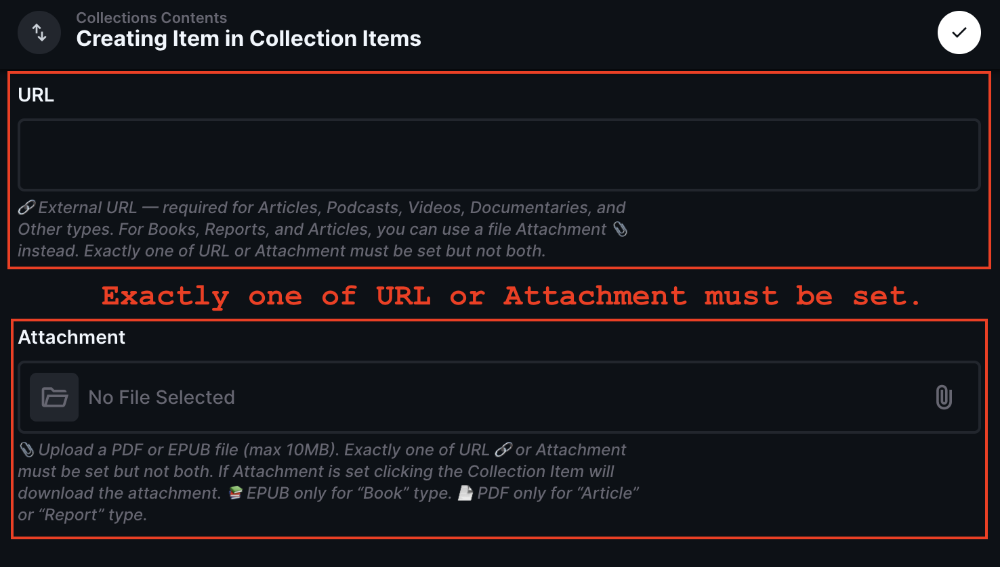

This guide is for Curators — people who help edit Collection content for the website.
💡 You will need the following which will be sent securely to you separately:
- The URL to the admin console.
- Your username and password for Basic Authentication.
- Your Directus email and temporary password.
‼️ Keep your email and password private and secure. Do not share them with anyone.
💡 If you lose your email or password, contact us to reset it.
🔒 The admin console is protected by two layers of security.
- Basic Authentication
- Directus Login
First, you will see a Basic Auth dialog when you open the site.
💡 Tip: If the dialog does not appear or you see "401 Unauthorized", try refreshing the page. If you still cannot access it, contact us.
After passing Basic Auth, you will see the Directus login screen.


💡 All fields are required. You will not be able to save the Collection without filling in all the fields.
| Field | Description |
|---|---|
| Status | 💡Determines if the Collection is live on the websiteThe status of the Collection. Set to "Published" to make the Collection live on the website or "Draft" to keep it hidden. |
| Title | The title of the Collection - appears as the main header text. The URL of the Collection page on the
website will also be derived from the title: for example a Collection called "High-speed Rail
Network" will be
available at "https:// |
| Hero Image | 💡 MINIMUM WIDTH: 2,560px, MINIMUM HEIGHT: 1,920px — Wide banner image for the Collection page |
| Summary | A short summary of what the Collection is about (max 255 characters) - displayed on cards on the homepage |
| Description | A longer rich text description (must be between 750 - 900 characters) that serves as the main explanation of the Collection: what it's about, why it's important, what to expect, etc. |
| Topics | Topics the Collection is about. At least one must be set (e.g., Geopolitics, Economics, Agriculture, Philosophy) |
| External Items | ‼️ The main contents of the Collection — articles, podcasts, videos, books, reports, documentaries. You can either "Add Existing" items from the searchable database or "Create New" items from scratch. See "Populating the Collection Contents" section below for more details. |
Collection contents are made up of External Items — the articles, podcasts, videos, books, reports, and documentaries that appear on a Collection page. You can either Add Existing items from the searchable database, or Create New items from scratch.
There are two ways to add items to a Collection:
Search the 15,000+ items already in the database and attach them to the Collection without recreating them.
To add an existing external item click:
Add Existing -> External Items

Then you can search through the existing database of 15,000+ saved items:


You can also create a brand-new item directly inside the Collection. This is useful when you have found a book, report, documentary, or article that is not yet in the database. You can create Books 📙, Reports, Documentaries 🎬, Articles, Podcasts and Videos (there is no "Other" type). You must fill in all required fields including adding a single image, and then hit save.
Click Create New -> External Items inside the Collection's External Items section, fill in the fields below, and save.
Created items are automatically linked to the "Resources Not Added" resource, so they appear in the Collection and in search results.
💡 Fields marked required must be filled in before you can save. Optional fields can be left blank. The system validates your entry and shows a clear error message if any rule is not met.
| Field | Description |
|---|---|
| Status | Set to Published for the item to appear on the live Collection page, or Draft to hide it. |
| Type | What kind of item this is: Book 📙, Report, Documentary 🎬, Article, Podcast, or Video. There is no "Other" option. |
| Title | The headline shown on the card. Required. |
| Summary | Short plain-text description shown on the card. Required. |
| URL | The link to the item on the web (article, video page, publisher page, etc.). Clicking the card opens this URL. Required for all types except Books and Reports, where you may instead upload a file Attachment. Books and Reports may have both a URL and an Attachment. |
| Attachment | 📎 — Upload a PDF or EPUB file (max 10MB). Clicking
the card downloads the file instead of following a URL.
📚 EPUB files are only allowed for items of type Book. 📄 PDF files are only allowed for items of type Book or Report. 💡 Rule: only Books and Reports can have file attachments. For all other types, an attachment is forbidden and a URL is required. When an item has an attachment, a 💾 download badge appears on the card and the tooltip shows a download icon instead of an external link icon. |
| Image (or Image URL) | 🖼️ Exactly one is required for every item: either an uploaded Image file OR an Image URL (og_image), but never both and never neither. The system will reject a save that has neither or both. |
| Author | The person who wrote or presented the piece (e.g. a journalist, author, or podcast guest). Shown in the card byline. Required. |
| Site Name | Optional. The name of the publication or publisher. Appears in the byline after the author, separated by |. For books this may be the publisher. |
| Site URL | Optional. The website of the publication. When set, Site Name becomes a blue clickable link to this address (opens in a new tab). Leave blank if you only want the name shown as plain text. |
| Published At | Optional. Publication or release date shown on the card. |
| Topics | At least one topic tag (e.g. Geopolitics, Economics). Required. |

📷 Screenshot may be outdated. It shows the old "Collection Item" form — the merged "External Item" form looks similar. A new screenshot is a follow-up task.
On the website, the byline appears as: Author | Site Name (when Site Name is set).

📷 Screenshot may be outdated. It references the old "Collection Item" form. New screenshots are a human follow-up task.
Instead of linking to an external URL, you can upload a PDF or EPUB file (max 10MB) that users can download directly by clicking the External Item card.
⚠️ Important rules for attachments:
- Books and Reports may have either a URL or a file attachment, and may even have both. All other types require a URL and are forbidden from having an attachment.
- 📚 EPUB files may only be attached to items of type Book.
- 📄 PDF files may only be attached to items of type Book or Report.
- The system will show a clear error if you try to save with the wrong file type for the chosen item type, or an attachment on a non-book/report item.
❤️ Please respect authors and their livelihoods.
- Do not upload copyrighted PDFs or EPUBs without permission.
- If the author is alive and makes their living from their work, link to where people can buy their book instead.
- Think tanks and institutions bankrolled by the US defence industry or corporate lobbyists? They're not exactly hurting for cash — help yourself.
- When in doubt: link, don't upload.
When an attachment is present, the External Item card on the website will show:
To find a suitable hero image, I recommend using Google Advanced Image Search.
💡 Google is obviously not our friend but for this purpose it is very useful.
It must be a wide image that is at least 2,560px wide and 1,920px high. Please use a high-quality image so it looks good in the design of the page.
Use the following filters to find a suitable image:

Example search results:

🚀Saving the Collection with a status of "Published" will automatically trigger a website deploy; expect 3-5 minutes for the new or updated Collection to be live.
💡If you save the Collection with a status of "Draft", the changes will not be published to the website until you update the status to "Published".
🥲If you wish to unpublish the Collection, you can update the status to "Draft" and save the Collection. This will remove the Collection from the website after 3-5 minutes.

Troubleshoot common issues:
Contact us if you run into any issues.